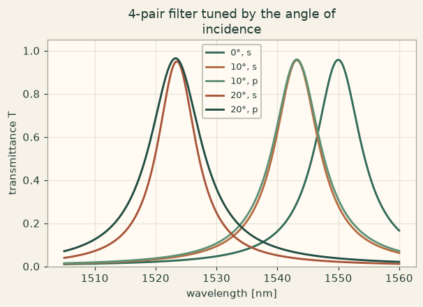

Docs › Examples › Bragg reflector bandpass filter
Wave optics · 1D
Bragg reflector bandpass filter
Two quarter-wave Bragg mirrors around a half-wave spacer that pass a narrow line at 1550 nm inside a wide stop band.

What it computes
OneSimulation solves the plane-wave Maxwell problem in the layered filter with its coherent optical stack, which cascades the scattering of every film and returns reflected, transmitted and absorbed power over wavelength, angle and polarisation. Filters with 3 to 6 mirror pairs are compared, the stop band is shown in decibels and the line is tuned by tilting the beam.
What it checks
The peak transmission equals the absentee-layer value 0.957420 at exactly 1550.000 nm for all filters, and the line width approaches the Fabry-Perot formula with mirror penetration as the mirrors improve (24.38 against 23.07 nm, +5.7 %, for 3 pairs down to 1.330 against 1.325 nm, +0.35 %, for 6 pairs).
The notebook
The complete notebook, cell by cell. Run it to produce the figures and the comparison printout.
A distributed Bragg reflector (DBR) of quarter-wave high- and low-index films reflects almost all light in its stop band. Two such mirrors separated by a half-wave spacer form a Fabry-Perot cavity: at the design wavelength \(\lambda_0\) the round trip in the spacer is a whole wavelength, the cavity resonates and a narrow transmission line opens in the middle of the stop band. This is the classic single-cavity interference filter of wavelength-division multiplexing.
The filter on a glass substrate is \((HL)^x\,HH\,(LH)^x\), seen from air:
| layer | material | refractive index | thickness at \(\lambda_0=1550\) nm | |---|---|---|---| | H | TiO\(_2\) | \(n_H=2.35\) | \(\lambda_0/(4n_H)=164.9\) nm | | L | SiO\(_2\) | \(n_L=1.46\) | \(\lambda_0/(4n_L)=265.4\) nm | | HH spacer | TiO\(_2\) | \(n_H=2.35\) | \(\lambda_0/(2n_H)=329.8\) nm | | air / substrate | | \(n_0=1.00\) / \(n_s=1.52\) | semi-infinite |
CoherentOpticalStack treats every film as a scattering element for the forward and backward plane wave and cascades them from air to glass; it returns the reflected, transmitted and absorbed power for any wavelength, angle and polarisation.
Reference (H. A. Macleod, Thin-Film Optical Filters, 5th ed., CRC Press 2018, ch. 8; M. Born and E. Wolf, Principles of Optics, 7th ed., §7.6). At \(\lambda_0\) the spacer and all mirror pairs are absentee layers, so the filter transmits like the bare substrate:
Seen from the spacer, each mirror presents the admittance \(Y_j=(n_L/n_H)^{2x}n_j\) (\(n_j\) the medium behind it) and reflects \(R_j=\big((n_H-Y_j)/(n_H+Y_j)\big)^2\). With \(R=\sqrt{R_1R_2}\) the Fabry-Perot line has the relative full width at half maximum
where \(m=1\) is the order of the half-wave spacer and the second term accounts for the phase dispersion of the mirrors, i.e. the penetration of the field into them. Near the peak the line is a Lorentzian \(T\approx T(\lambda_0)\big/\big(1+(2(\lambda-\lambda_0)/\Delta\lambda)^2\big)\).
import numpy as np
from onesim.materials.electromagnetic import CoherentOpticalStack, OpticalLayer
from onesim.visualization import theme, plots
theme.set()Model
One filter per number of mirror pairs \(x\).
design, n_air, n_high, n_low, n_glass = 1550e-9, 1.0, 2.35, 1.46, 1.52
high, low = OpticalLayer(thickness=design / (4 * n_high), index=n_high), OpticalLayer(thickness=design / (4 * n_low), index=n_low)
filters = {pairs: CoherentOpticalStack(layers=(high, low) * pairs + (high, high) + (low, high) * pairs) for pairs in (3, 4, 5, 6)}
wavelength = np.linspace(0.98 * design, 1.02 * design, 80001)
lines = {pairs: stack(wavelength, 1.0, n_air, n_glass, polarization="s").transmitted for pairs, stack in filters.items()}Comparison with the closed forms
Peak transmission and its wavelength, and the full width at half maximum of the line, for every filter.
peak_transmission = 1 - ((n_air - n_glass) / (n_air + n_glass)) ** 2
mirror = lambda pairs, n_behind: ((n_high - (n_low / n_high) ** (2 * pairs) * n_behind) / (n_high + (n_low / n_high) ** (2 * pairs) * n_behind)) ** 2
order = 1 + n_low / (n_high - n_low)
closed_width = {pairs: (1 - np.sqrt(mirror(pairs, n_air) * mirror(pairs, n_glass))) /
(np.pi * order * np.sqrt(np.sqrt(mirror(pairs, n_air) * mirror(pairs, n_glass)))) * design for pairs in filters}
print(f"closed-form peak transmission {peak_transmission:.6f} at 1550.000 nm")
print("pairs peak T at [nm] FWHM computed [nm] Fabry-Perot [nm] deviation")
widths = {}
for pairs, transmitted in lines.items():
top = np.argmax(transmitted)
half = transmitted[top] / 2
widths[pairs] = wavelength[top:][transmitted[top:] < half][0] - wavelength[:top][transmitted[:top] < half][-1]
print(f"{pairs:5d} {transmitted[top]:10.6f} {1e9 * wavelength[top]:10.3f} {1e9 * widths[pairs]:16.4f} "
f"{1e9 * closed_width[pairs]:18.4f} {100 * (widths[pairs] / closed_width[pairs] - 1):+11.2f} %")The whole stop band
Outside the narrow line the two mirrors block a band several hundred nanometres wide; the transmission in decibels shows how deep. A tilted beam moves the line to shorter wavelengths.
broad = np.linspace(1100e-9, 2200e-9, 11001)
blocking = {pairs: 10 * np.log10(filters[pairs](broad, 1.0, n_air, n_glass, polarization="s").transmitted) for pairs in (3, 5)}
tuning = np.linspace(1505e-9, 1560e-9, 5501)
tilted = {f"{angle}°, {polarization}": filters[4](tuning, np.cos(np.radians(angle)), n_air, n_glass, polarization=polarization).transmitted
for angle, polarization in ((0, "s"), (10, "s"), (10, "p"), (20, "s"), (20, "p"))}
print("line centre of the 4-pair filter at oblique incidence: " +
", ".join(f"{label} {1e9 * tuning[np.argmax(values)]:.2f} nm" for label, values in tilted.items()))Figure
zoom = np.abs(wavelength - design) < 20e-9
fig = plots.figure(1, 2, size=(13, 4.8))
plots.line(1e9 * wavelength[zoom], {f"x = {pairs}": lines[pairs][zoom] for pairs in (3, 4, 5)},
reference={f"x = {pairs}": (1e9 * wavelength[zoom], peak_transmission / (1 + (2 * (wavelength[zoom] - design) / closed_width[pairs]) ** 2))
for pairs in (3, 4, 5)},
ylimits=(0, 1.05), xlabel="wavelength [nm]", ylabel="transmittance T",
title="Pass line (dashed: Lorentzian)", legend="upper right", ax=fig[0])
plots.line(1e9 * broad, {f"x = {pairs}": values for pairs, values in blocking.items()}, ylimits=(-40, 3),
xlabel="wavelength [nm]", ylabel="transmittance [dB]", title="Stop band and pass line", legend="lower right", ax=fig[1])
plots.show()
plots.line(1e9 * tuning, tilted, ylimits=(0, 1.05), xlabel="wavelength [nm]", ylabel="transmittance T",
title="4-pair filter tuned by the angle of incidence", legend="upper center")
plots.show()Going further
Use a low-index spacer (low, low) or a higher spacer order to trade line width against blocking, or cascade two cavities, (HL)^x HH (LH)^x L (HL)^x HH (LH)^x, to obtain the flat-topped pass band of a two-cavity filter.